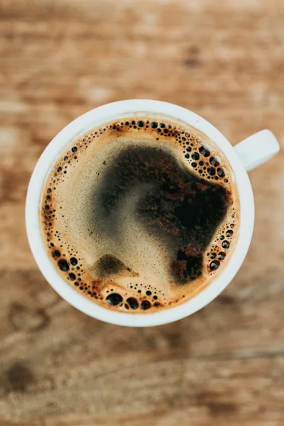
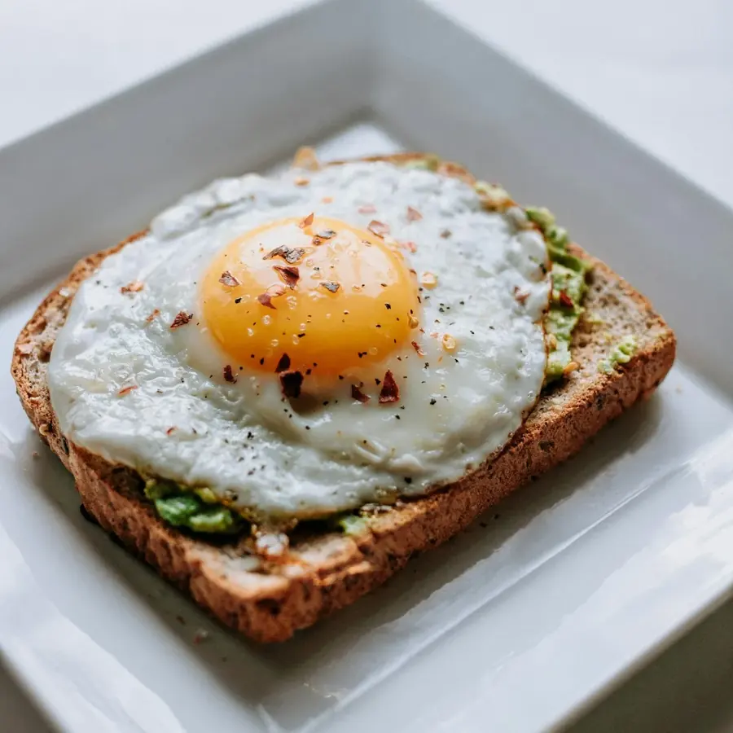
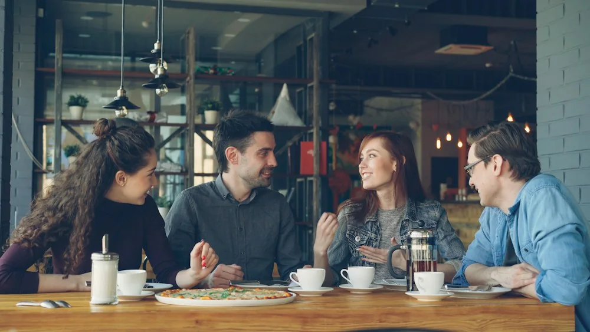
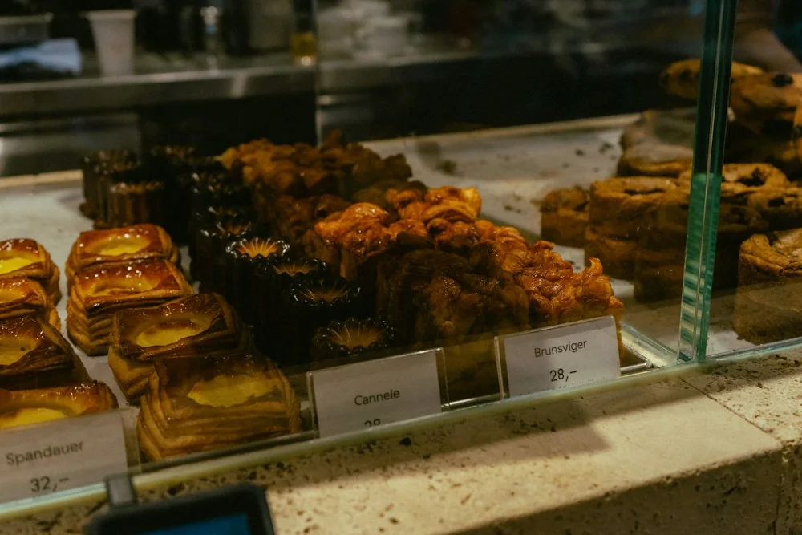
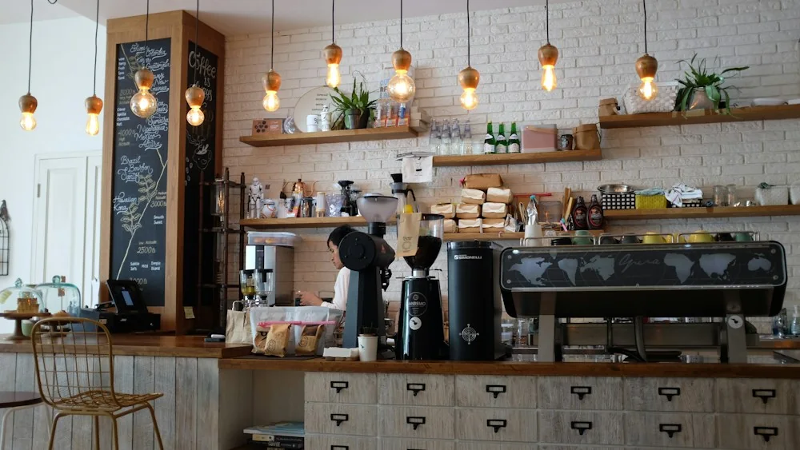
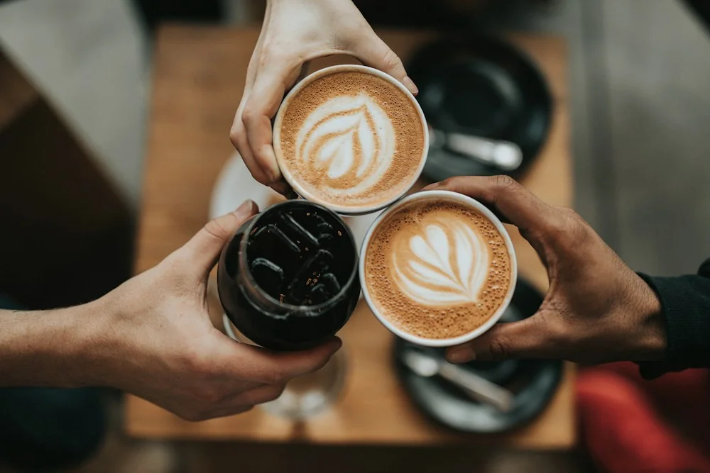
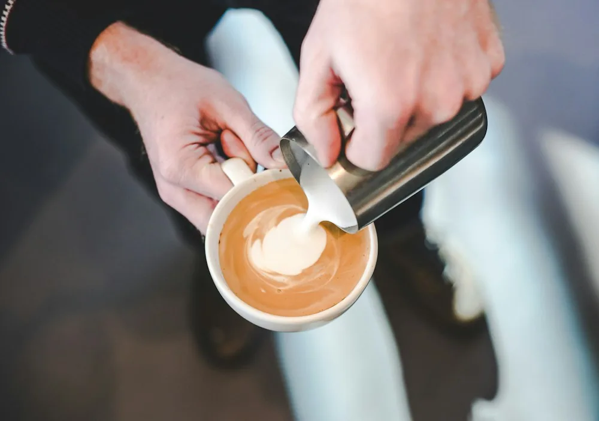
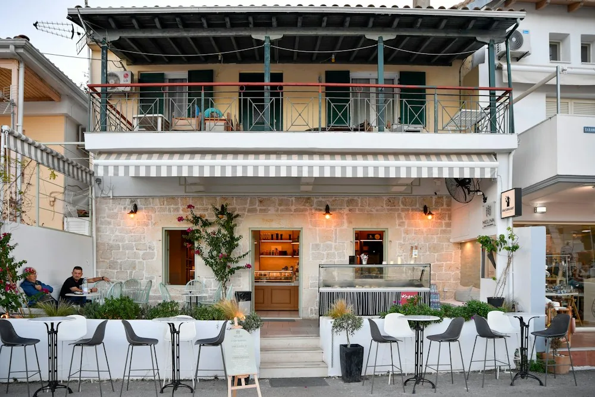

Еспресо
55 ₴Насичений, з карамельним післясмаком.

Черкаси / Кава · Сніданки · Вечори
Тут є час на каву,
теплий сніданок і хорошу розмову.

01 / Місце для маленьких пауз
Lume — це світло у вікні, аромат свіжої випічки й місце, де можна видихнути.
Зранку ми печемо круасани та готуємо каву, а сніданки подаємо до 15:00. Любимо прості смаки, сезонні продукти та розмови без погляду на годинник. Увечері запалюємо світло тепліше й запрошуємо на вечерю.
Це історія вигаданого закладу — демо-концепт від Es1xx.
03 / Маленькі історії щодня
Крихти на столі. Теплі долоні.
І ще одна причина залишитися.






Атмосферні фото з Unsplash. Не зображують реальний заклад Lume.
04 / Теплі слова
«Планувала лише каву. Залишилася на сирники й ще пів години біля вікна.»
«Сніданок о другій дня — саме те, що треба для повільної суботи.»
«Тут легко відкласти телефон. Смачна вечеря й атмосфера, у яку хочеться повернутися.»
05 / Знайдемо час побачитися
Контакти — плейсхолдери. Не є контактами реальної кавʼярні.
Умовна демолокація · © OpenStreetMap ↗
06 / Залишимо вам місце
На ранкову каву чи довгу вечерю.
Розкажіть, коли вам зручно.